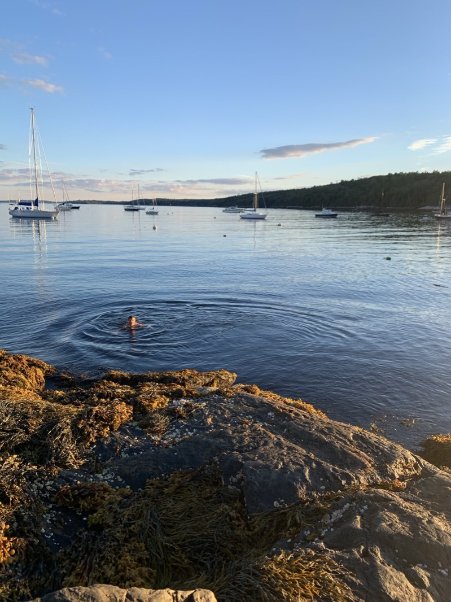

I was born in South Texas, grew up there and in North Carolina, and graduated from UNC-Chapel Hill in 2010. I spent the next 15 years living in New York City, and now I live in Boston.
I lead supply chain at Sway, a startup replacing plastic packaging with seaweed-based materials. Before Sway, I was an early employee at a handful of other startups, including Bonobos and Care/of. I also co-founded Cardinal Workshop, a furniture business, with one of my best friends from growing up.
I love to run, read, be outside, and sail small boats. My favorite places to spend time are Midcoast Maine and anywhere in Spain. I’m half-Cuban, but not fluent in Spanish—I’m working on it!
Email: [turn on JavaScript to see it]
Instagram: @den.blanco
LinkedIn: dennis-blanco